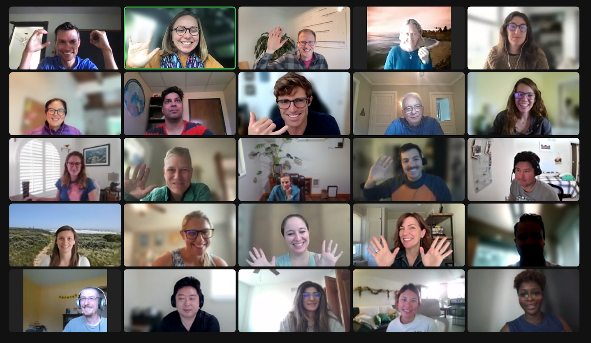
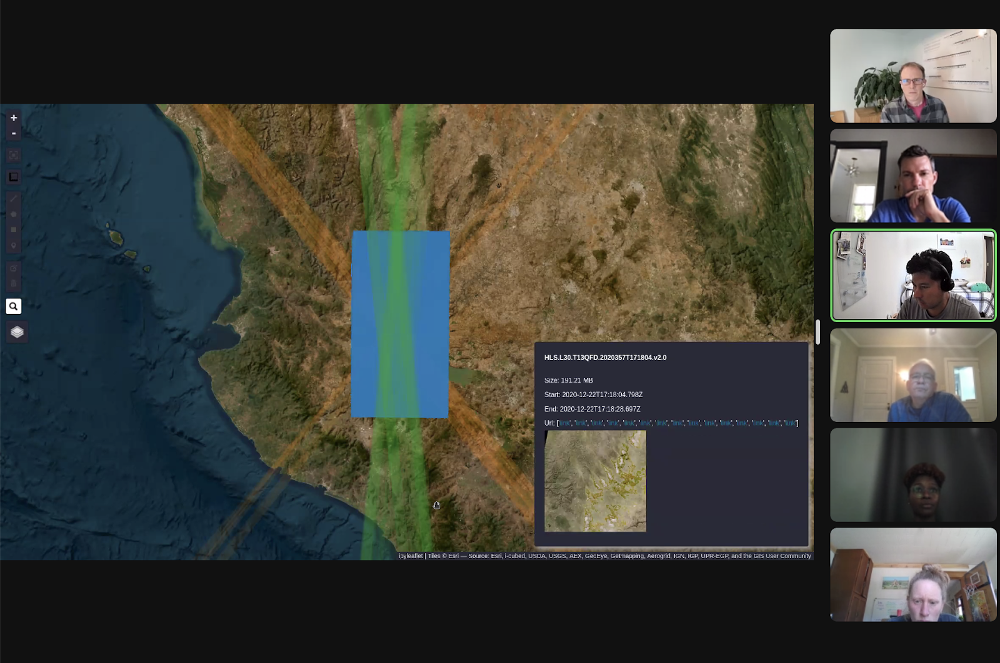
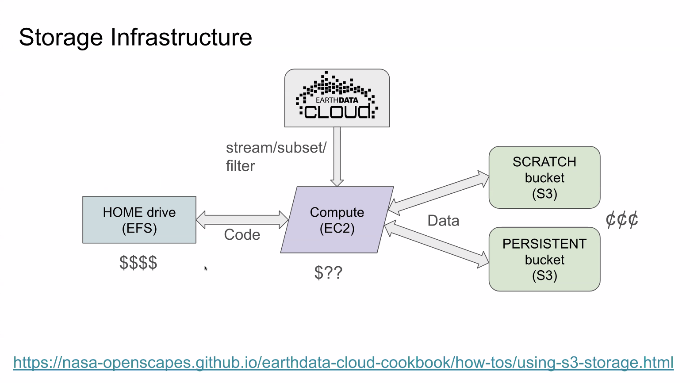
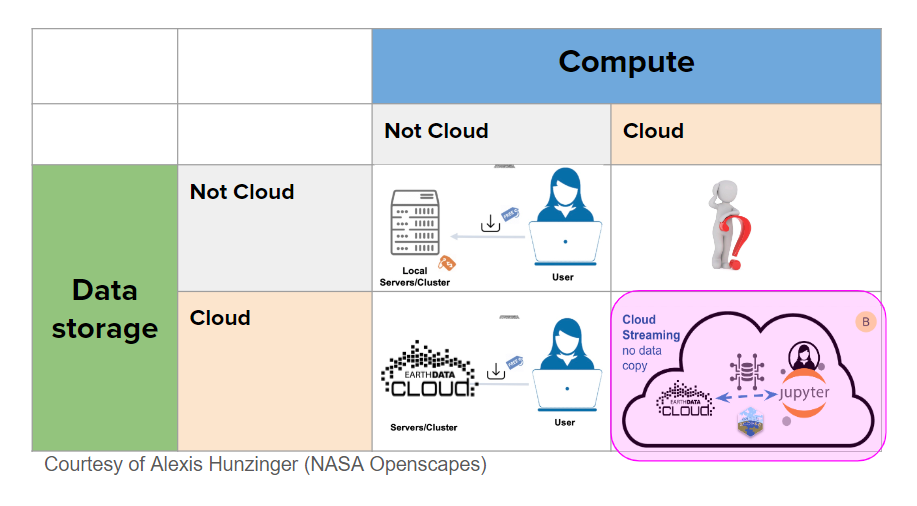
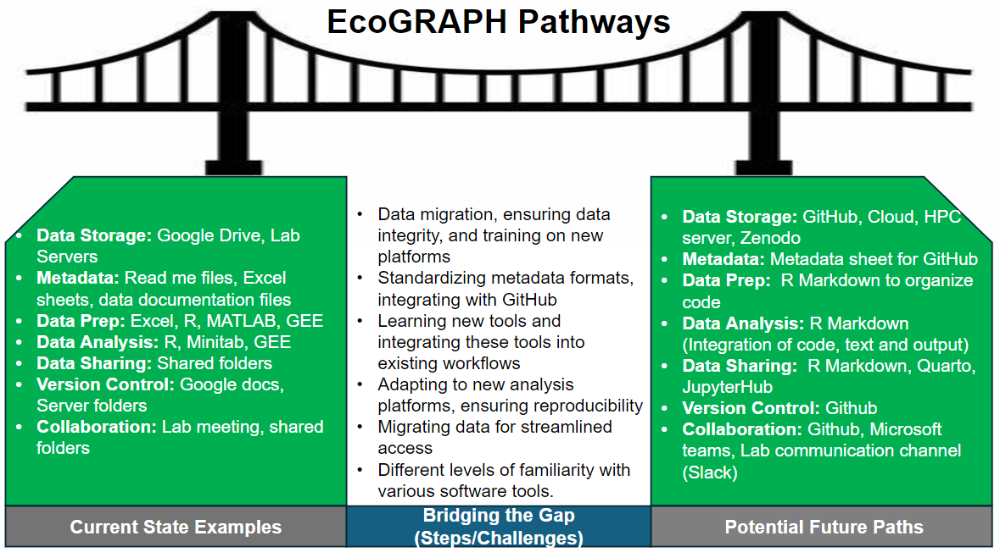

NASA Champions 2024: Data strategies for when to use cloud, coding strategies for parallelization, & first examples of big science in the Cloud
From April-May 2024, the NASA Mentors who span eleven Distributed Active Archive Centers (DAACs) co-led the third Champions Cohort with the NASA Openscapes project team, this year focusing on, teaching lessons they adapted for geospatial and cloud analysis. The Cohort included nine international research teams from academia and government that were curious about working with NASA Earthdata in the Cloud. Many teams were interested in using data from multiple DAACs. User cloud adaption takes time, given the new conceptual mindsets and technical skillsets it requires. During the ten weeks we worked together, NASA Mentors refined and extended previous lessons to focus on thinking through and planning the transition to using the Cloud for science research and applications, and initial experiments using the Cloud through our 2i2c JupyterHub. Below are these updates and YouTube clips!
There were also recurring themes/questions that we have heard before, some of which remain as open questions and continue to remain a challenge. Importantly, Amazon Web Services (AWS) Cloud onboarding, when to use what resources, how to set them up, and how to discuss needs with organizational leadership and IT staff, which often falls outside the scope of NASA DAACs, yet it’s a key element of helping users adopt the Cloud and use NASA data in the Cloud. It is encouraging to hear some of the champions starting to have conversations with their institutions, IT departments, and making their needs known, which is likely a big part of the solution, too. We are thankful to NASA Openscapes Champions for informing and nudging these conversations! All of this work is underpinned by Openscapes and NASA’s commitment to open science practices and a kinder collaborative culture. This cohort is funded by NASA and is part of our NASA Openscapes Framework project.
Quick links:
- Cohort webpage: https://nasa-openscapes.github.io/2024-nasa-champions
- Aronne Merrelli’s talk: First Forays into the Cloud: Experiences from NASA Openscapes in 2023. YouTube Video
NASA Champions Cohort Overview
NASA Openscapes is a multi-year project to develop a cohesive approach to building cloud migration capacity across NASA Earthdata from NASA’s Earth Observing System Data and Information System (EOSDIS) Distributed Active Archive Centers (DAACs) and the research teams supported by the DAACs. We do this through supporting a community of NASA DAAC mentors, who are primarily dedicated to user support. This community has learned together how to use NASA Earthdata in the Cloud. They have translated that experience into a series of hackathons, workshops, self-paced tutorial material in the NASA Earthdata Cloud Cookbook, and through an intensive, 10-week NASA Openscapes Champions program.
User cloud adaption can often have a steep learning curve and feel overwhelming. The NASA Openscapes Champions Cohort brings together research teams that are interested in migrating their existing NASA Earthdata workflows to the Cloud with NASA DAAC Mentors who are extremely knowledgeable about the data they serve and the initial pathways to using that data in the Cloud. This Cohort provides a common, welcoming place for teams to learn together, ask questions about using the Cloud, plan their transition, and do initial experimentation using the NASA Openscapes 2i2c JupyterHub. Because this is a more intensive experience, the teams build collaborative partnerships with DAAC mentors, and the mentors can more quickly identify and work on solving issues that will make cloud migration easier for many more users. We led the first NASA Openscapes Champions Cohort in 2022.
The third NASA Openscapes Champions Cohort ran during April-May 2024 with nine research teams interested in a wide variety of NASA Earthdata and various stages of cloud technology familiarity. You can learn more about their research below.

Together as a Champions Cohort, these teams discussed what worked and didn’t work as they migrated workflows to the Cloud, focusing on collaboration and Open Science. We met as a cohort five times over two months on alternating Wednesdays. Each cohort call included a welcome and code of conduct reminder and two teaching sessions with time for reflection in small groups or silent journaling and group discussion before closing with suggestions for future team meeting topics (“Seaside Chats”), Efficiency Tips, and Tips. All topics and the slides presented are shared on the 2024 Cohort page. Additional coworking sessions were scheduled on alternate weeks, where researchers could work quietly, screenshare to ask questions, or meet with their team to discuss further. In addition, the teams have access to Openscapes’ 2i2c Jupyter Hub, which will continue for the next year.
The NASA Openscapes Mentors supported the Champions and contributed to the curriculum (all available at https://openscapes.github.io/series). In particular, the NASA Openscapes Champions Curriculum had important additions.
Aronne Merrelli (University of Michigan, 2023 Champion) shared his experiences of First Forays into the Cloud, and how it’s possible to go from cloud novice to feeling like it’s a superpower and doing real analyses for his American Geophysical Union (AGU) poster (and beyond!). YouTube clip
Catalina Taglialatela (PO.DAAC) led the Earthdata Cloud Clinic with datasets from several DAACs and using the earthaccess Python library for NASA Earthdata search & access in the Cloud.
Matt Fisher (NSIDC) updated psychological safety examples - this lesson particularly resonated with the Champions teams who reflected together about how this is important for learning new things. YouTube clip.
Alexis Hunzinger (GES DISC) extended the Data strategies in the Cloud lesson with considerations of environmental impact /climate change and streaming data in the same way you stream video on a streaming service such as Netflix, without downloading to a local computer or server.
Cassie Nickles (PO.DAAC) walked through and welcomed contributions to NASA Earthdata Cloud Cookbook, a learning-oriented resources hub to support scientific researchers who use NASA Earthdata as NASA migrates data and workflows to the cloud.- YouTube clip.
Brianna Lind (LP DAAC, KBR Inc., under contract to the U.S. Geological Survey)’s Open Communities lesson solicited many additional examples including Cloud Native Computing Foundation (CNCF), US Research Software Engineering (US-RSE), Research Data Alliance (RDA), Earth Science Information Partners (ESIP), CryoCloud, Project Pythia.
Mahsa Jami (LP DAAC, KBR Inc., under contract to the U.S. Geological Survey) shared coding strategies for parallelizing code and dove into parallel processing from a scientist perspective. “Pleasingly parallel” is a term for tasks that are completely independent from each other - for example, to validate whether each value in a dataset is within a threshold. YouTube clip.
Luis Lopez (NSIDC) demonstrated new interactive features of the earthaccess Python library: earthaccess.explore()which provides interactivity without having to download data. This feature only streams metadata (of the dataset’s spatial coverage, volume size) and not the data itself. earthaccess.explore() enables previewing the data and helps narrow down what you may eventually want to stream to memory or download. Additional features enable you to identify different satellite swath overlaps in a selected area and save egress costs because it works more efficiently. YouTube clip.
Andy Teucher demoed data storage strategies in the Cloud, first via a notebook tutorial about How to store data in the Cloud (including where to store and how to delete your intermediate & test files) and then about storage strategies & costs. YouTube clip.


Teams also heard a NASA Earthdata Cloud Update (slides) from Special Guest Justin Rice, NASA Goddard Space Flight Center, ESDIS Project Office, Deputy Project Manager/Data Systems.
What we learned and challenges
The Openscapes Champions provides a space for teams to come together to learn from each other and across teams. It is a way to collaborate and distribute leadership roles across the various teams, helping to reduce the burden team leaders often feel of needing to learn everything first before teaching it to the rest of the team.
Here are the highlights of the third Champions Cohort:
Science teams were using data across DAACs - more this year than ever! It felt great to demonstrate the same earthaccess workflows with datasets from different DAACs.
Everyone had less capacity to engage this year - both from the Mentors’ side and Champions side. We saw less activity between sessions on Slack and in Coworking. This could in part be video conferencing fatigue, but also might highlight the benefit of people (Mentors + Champions) having additional time outside of the normal five calls to experiment, ask questions, and develop. This kind of engagement has led to useful development in the past (refer to next bullet).
Past Champions Cohorts have resulted in useful developments, including the earthaccess Python library and MATLAB integration in the Hub. This year, emerging development is around “how to talk to your institution’s IT about your cloud needs” and NASA Plankton, Aerosol, Cloud, ocean Ecosystem (PACE) data access. More to come!
We had a lot of “new” content added from what we learned in the last year (Hub storage in S3 buckets, computing concepts, psychological safety!). This meant that we spent less time on core open science skills & practices that we do in the Core Champions Lesson Series (https://openscapes.github.io/series). These core open science skills & practices can help people feel confident and willing to share needs.
Feedback from participants was valuable:
“Openscapes has allowed me to see that working in Python and in the Cloud is not as scary as I once thought it was. I hope to collaborate more with others that are already using cloud computing so I can get my feet wet in some publishable research using S3 buckets. Where before I would not have thought that I could be a viable contributor.”
“I used to think that cloud computing was for parallelizing processes and when you needed a really fast computer. I never thought about its ability to store data in a format that is easily accessed for VERY large data sets. I wish that more people in fisheries would start thinking about how their data could be stored in multidimensional arrays rather than flat data frames.”
“Many people have great ideas but facilitators often have to work to get those ideas out into the open and the same method of getting those ideas out will NOT work on everyone. So, if you care about progress you should care about using multiple avenues to allow people to express themselves.”
Several challenges working with NASA Earthdata in the Cloud are still unresolved, many which apply more broadly than just NASA data and rather to user adoption of the cloud computing technology in general. These include:
While Aronne Merrelli’s story was inspiring, Champions reflected that they find it hard to think about projects that would be good for the Cloud when they have no experience using the Cloud – so how can you find a project to move to the Cloud when your brain won’t let you go there in the first place?
Cost - we still need to have and communicate a better sense of this. We intentionally do not have the “how much does it cost” conversation early on because our intention is to help people experience what it involves and first think about “when to cloud.” However, we do have cost numbers from previous years and plan to gather more cost statistics for the upcoming ESIP summer meeting.
We need to think about storage differently in the Cloud because users pay daily to store data in the Cloud. Champions commented that they often “over-produce” files because storage is cheap and access is easy on local machines. How do we learn what is really important and what we can “toss”?
Folks had interest in learning more about working with confidential data in the Cloud, as researchers often combine non-NASA data for their analyses and this is expected to be an increasing need.
Several themes/questions recurred that we have heard before and for which remain as open questions. Importantly, Amazon Web Services (AWS) Cloud onboarding, when to use what resources, how to set them up, and how to discuss needs with organizational leadership and IT staff, often falls outside the scope of NASA DAACs, yet it’s a key element of helping users adopt the Cloud and use NASA data in the Cloud. It is encouraging to hear some of the champions starting to have conversations with their institutions, IT departments, and making their needs known, which is likely a big part of the solution, too.

Team Pathways and Cloud Momentum
Part of the Openscapes Champions approach is that teams decide what to work on. The teams devoted at least 8 hours a month to focus on their workflows, learning, and collaborating within and across their teams. During this time, they thought through and discussed their current NASA Earthdata workflows and planned and experimented with transitioning their workflows to the Cloud using Openscapes’ 2i2c-hosted Jupyter Hub as a first step. As in other Openscapes Champions cohorts, teams also realized the power of Open Science and that open is a spectrum that includes considering future us - potentially just you or your group in 3 months.
“Fledging” was a big theme this year, especially following Aronne Merrelli’s talk. We think of this as where do researchers go to do their real science, when they leave the Openscapes 2i2c Hub for experimental purposes? What do they need to know in terms of cost estimates, docker images, administrative personnel (potentially both technical and policy)? We saw teams and the NASA DAAC mentors make substantial progress in migrating workflows to the Cloud. A few highlights from teams that participated in the cohort included:
The Ocean Science Analytics team experimented with and found earthaccess to be insightful and useful! This was valuable as a hands-on activity. The team members have questions about setting up AWS on their own and would like to understand what tools are needed for a specific task. For example, when could dask, an open-source Python library for parallel computing, be used for a task or would another tool be more appropriate?
The NOAA IEA (Integrated Ecosystem Assessment) team benefitted from having an improved conceptual understanding of what is involved with cloud workflows – they would like to work with NOAA IT to understand what’s available and possible with JupyterHubs and find workable solutions, now that we understand more of the possibilities.
The PACE Hackweek team found Hubs very instrumental in learning cloud computing and helping to create hackweek tutorials. They have used their seaside chats for tutorial development, using GitHub, and have included people outside their team. They have gained more understanding about AWS EC2/storage service by having conversations with Science Managed Cloud Environment (SMCE) for gaining access to Open Science Studio (OSS).
The NOAA Coastwatch team took what they learned from the Earthdata Cloud Clinic and reused it to teach 70 colleagues from across NOAA at the NOAA Enterprise Data Management Workshop in their EDMW-EarthData-Workshop-2024. They taught the same tutorials twice, first in Python using earthaccess and then in R using earthdatalogin.
The Wimberly Lab Team shared their pathway with a bridge metaphor and how they are tackling challenges through talking about this in lab meetings and learning new tools together.
Asynchronously, Lucas Barbedo from the Liu-Zhang team shared about using NASA PACE data [comment + thread] in the 2i2c JupyterHub following the Earthdata Cloud Clinic, and shared progress through a GitHub discussion: What’s happening on the NASA Openscapes Hub!? .

Additional Cloud resources shared from the NOAA Enterprise Data Management Workshop
Onward!
If the 2024 NASA Openscapes Champions Cohort is any indication, the NASA Earthdata community is making substantial strides in building capacity to use cloud resources, and the transition is successfully happening. Although the cohort is officially over, these teams are just at their beginning, and we are excited to follow their results as they experiment with parallelizing code and incorporating storage considerations in their workflows. We plan to continue to work with them in the next year, as their 2i2c managed cloud Hub access continues. As we did last year, we are planning to offer the Carpentries Instructor Training for interested Champions this summer. The Carpentries is a nonprofit that teaches introductory coding skills around the world. Instructor Training is not coding-specific, but it is an educational approach to teaching technical topics. As part of our NASA grant, we have partnered with The Carpentries and are excited to extend this opportunity to Champions because many of them mentioned wanting to contribute more to open science efforts going forward.
We are grateful to this Champion Cohort for their early adopter spirit, their time and effort to make this migration, and all the feedback and input they provided. They all participated in this cohort, knowing that while this was the third Cohort, they were among the first research teams to use NASA Earthdata in the Cloud. What they learned and shared will make it easier for subsequent teams to make this same shift. Many teams articulated this spirit of open leadership, explicitly asking how they could help other teams. We also learned so much from this cohort, which will help us refine the NASA Openscapes Champions program, as we plan for our next cohort and our work with the DAAC mentors in the future years of our project.
About the NASA Openscapes Champions Teams
The Liu-Zhang (University of Louisiana at Lafayette & University of Southern Mississippi) team primarily uses NASA Earthdata Search to access datasets from Earth Surface Mineral Dust Source Investigation (EMIT) and The ECOsystem Spaceborne Thermal Radiometer Experiment on Space Station (ECOSTRESS) missions, which we then use to create algorithms for ecosystem analysis. We have a particular interest in using hyperspectral data, such as the upcoming PACE data to study vegetation and algae in water bodies. Our work involves developing deep learning models for habitat classification and analyzing water quality. Transitioning to hyperspectral imaging and deep learning greatly increases computational demands, making it challenging to execute code locally compared to leveraging cloud computing resources. Additionally, this transition enhances the accessibility of our algorithm to the public. Currently funded by EMIT and serving as early adopters of PACE, we are eager to contribute to the NASA Cookbook by offering new algorithms that apply to NASA’s latest satellite data, such as EMIT and PACE.
The Ocean Science Analytics team incorporates NASA data in our studies of coastal and offshore marine regions, specifically as it pertains to marine mammals. Combining in situ data from hydrophones to determine the vocal occurrence of marine mammals with remotely sensed ocean color data, we use chlorophyll, net primary productivity, sea surface temperature, etc. to characterize the associated habitat and document changes over time. As a PACE early adopter, we are incorporating PACE data in our studies through large scale observations of photosynthesizing organisms, which will allow us to incorporate direct measurements of the presence and distributions of plankton species. This in connection with feeding behavior will provide a better understanding of the spatial use of these habitats.
The PACE Hackweek team supports the NASA PACE mission, which launched in February 2024 and is collecting unprecedented data from our global oceans, atmosphere, and land. PACE data will be hosted in the Cloud; therefore, we are interested in learning more about cloud-based workflows to access and analyze PACE data and contribute our efforts and outcomes to our community of end-users.
The NOAA CoastWatch team is motivated by how rising ocean temperatures, higher sea levels, melting ice, and increasing ocean acidity are changing the way marine life and ecosystems function in our world’s oceans. This affects everything from how we manage fisheries and protect communities that depend on fishing to how we protect important habitats and species. The ocean is expected to continue changing and changes are expected to become more extreme. A lot is at stake. Improving how we use Earth data in our workflows is essential. We have much we can learn about migrating to the Cloud by connecting with other earth science teams at NASA and with the NASA Openscapes mentors.
The Wimberly Lab (University of Oklahoma) team explores the impacts of changing climate and landscapes on ecosystems and human health, with an emphasis on developing spatial decision support tools to support public health decisions, land use planning, and natural resource management. We address these topics through landscape, regional, and global analyses using satellite remote sensing and other sources of environmental monitoring data. Specific research areas include the effects of environmental change on vector-borne disease outbreaks, the influences of human land use and wildfires on forest landscape dynamics, the impacts of agricultural expansion and intensification on native ecosystems, and the development of computer software for disease outbreak forecasting and landscape change modeling. We conduct our research in locations throughout the world including North America, West Africa, Ethiopia, and India.
The NOAA IEA team’s approach provides cross-disciplinary science to support ecosystem-based management in the Gulf of Mexico. For example, we conduct research on climate-fisheries interactions, changes in species ranges and distributions, and environmental impacts on fisheries such as those driven by harmful algal blooms. We use data from earth system modeling and remotely sensed data, including sea surface temperature, sea surface height, ocean currents, wind, ocean color, salinity, dissolved oxygen, and primary production indices. We are particularly interested in integrating modern open-science techniques to automate our core deliverables, called Ecosystem Status Reports, and other data products related to NOAA surveys. We’re beginning to test some of these approaches in ongoing projects. For example, the ongoing IEA-Wind project aims to develop data baselines to track the impacts of forthcoming offshore wind energy infrastructure development. The project has been conceptualized and executed thus far with an open-data approach. We believe that a deeper understanding of the concepts and approaches offered by this Cohort would allow for a more holistic application across Gulf of Mexico IEA efforts.
The NASA SERVIR Central America team are representatives of Costa Rica’s National System of Conservation Areas (SINAC, in Spanish), the Forest Research and Services Institute of the National University of Costa Rica, and the Central America Aerospace Network (RAC, in Spanish). The NASA / USAID SERVIR program is helping to connect the Costa Rican researchers with Openscapes. The team is responsible for generating Costa Rica’s official national forest cover maps, in the context of its national forest monitoring system. Therefore, involving the team will have a notable national impact in terms of their reporting to international commitments (e.g., the United Nations Convention on Biological Diversity (CBD), the United Nations Convention to Combat Desertification (UNCCD), the United Nations Framework Convention on Climate Change (UNFCCC), and Sustainable Development Goals (SDG) 15.2). The team is currently using Google Earth Engine (GEE) to access and process data from Sentinel-1 (SAR) and Sentinel-2 (optical). They combine these datasets and perform a supervised classification to generate land cover maps. While the team’s workflow is already in the Cloud (via GEE), they are interested in exploring additional computational capabilities that may be available via AWS for processing big data, including the inclusion of other datasets like that of the Landsat archive.
The POSTECH (University South Korea) team is actively engaged in climate modeling research, utilizing both Python and NCAR Command Language (NCL) scripts to analyze climate data. We are eager to expand our knowledge and skills by collaborating with experts in the field, and we are keen to explore new methodologies and insights. Joining your team presents an exciting opportunity for us to enhance our expertise and broaden our exposure to cutting-edge techniques in climate science.
Disclaimer: Any use of trade, firm, or product names is for descriptive purposes only and does not imply endorsement by the U.S. Government.
Reference herein to any specific commercial product, process, or service by trade name, trademark, manufacturer, or otherwise, does not constitute or imply its endorsement by the United States Government or the Jet Propulsion Laboratory, California Institute of Technology.
Citation
@online{thornton_(ornl)2024,
author = {Thornton (ORNL), Michele and Taglialatela (PO.DAAC, Jet
Propulsion Laboratory, California Institute of Technology), Catalina
and Lopez (NSIDC), Luis and Fisher (NSIDC), Matt and Hunzinger (GES
DISC), Alexis and Lind (LP DAAC, KBR Inc., under contract to the
U.S. Geological Survey), Bri and Jami (LP DAAC, KBR Inc., under
contract to the U.S. Geological Survey), Mahsa and Nickles (PO.DAAC,
Jet Propulsion Laboratory, California Institute of Technology),
Cassie and Teucher (NASA Openscapes), Andy and Merrelli (University
of Michigan \& 2023 Champion), Aronne and Robinson, Erin and
Lowndes, Julie and Openscapes Mentors, NASA},
title = {NASA {Champions} 2024: {Data} Strategies for When to Use
Cloud, Coding Strategies for Parallelization, \& First Examples of
Big Science in the {Cloud}},
date = {2024-07-24},
url = {https://nasa-openscapes.github.io/news/2024-07-24-2024-nasa-champions-cohort/},
langid = {en}
}